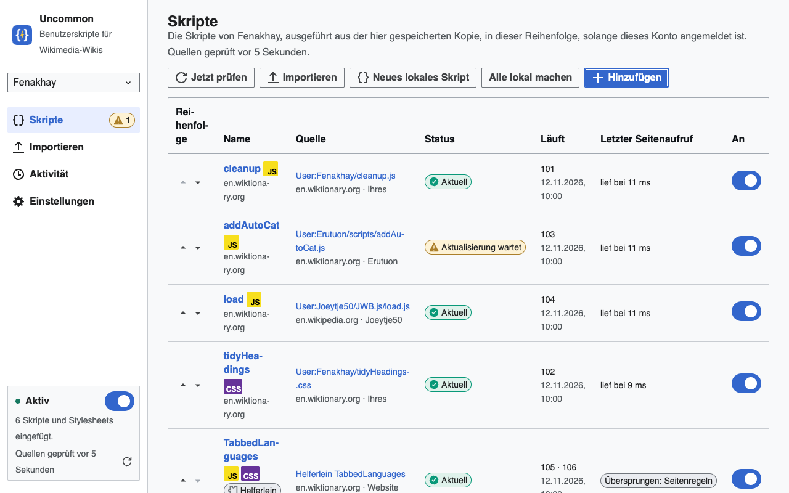
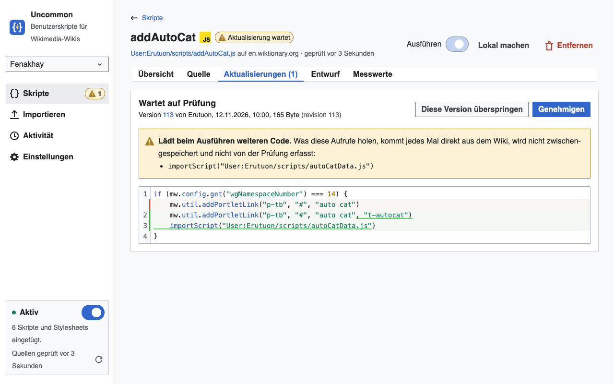

Installieren
Uncommon führt Ihre Benutzerskripte und Stylesheets für Wikimedia aus einer Kopie in Ihrem Browser aus, statt aus Ihrer common.js.
Ein Skript aus der common.js wartet bei jedem Seitenaufruf auf eine Kette von Anfragen: die Seite, das Startmodul, das Modul user und je eine weitere Anfrage für jedes importScript. Uncommon hält den Text jedes Skripts im Browser, der ihn vor den Skripten der Seite einfügt. Das Skript wartet nur auf das, was es von der Seite braucht, und für das Skript selbst wird keine Anfrage gestellt.
- Profile: eines für jedes Wiki-Konto. Die Skripte eines Profils laufen nur, solange dieses Konto angemeldet ist, auf den Wikis Ihrer Wahl: einem, mehreren oder allen Wikimedia-Wikis.
- Import: liest Ihre common.js, common.css, global.js oder global.css, listet jede Seite auf, die sie lädt, und fügt die gewählten hinzu.
- Aktualisierungen: Ihre eigenen Seiten folgen dem Wiki, sobald Sie speichern. Eine Version eines anderen Benutzers wartet, bis Sie ihren Diff gelesen und genehmigt haben; bis dahin läuft die genehmigte Version weiter.
- Helferlein: fügen Sie ein Helferlein Ihres Heimatwikis als einen Eintrag hinzu, mit seinen Skripten und Styles.
- Entwürfe: probieren Sie eine Änderung im Browser aus, bevor Sie sie im Wiki speichern.
- Seitenregeln: führen Sie ein Skript nur in bestimmten Namensräumen, Aktionen, Spezialseiten oder Inhaltsmodellen aus.
- Aktivität: sehen Sie, wann jedes Skript bei den letzten 200 Seitenaufrufen lief und warum eines übersprungen wurde oder fehlschlug.
Hinzufügen lassen sich nur Unterseiten von User: und Seiten in MediaWiki:, also Seiten, die nur ihr Besitzer oder die Administratoren des Wikis bearbeiten können. Uncommon liest anonym die Action API der Wikis und sonst nichts. Es bearbeitet nie ein Wiki und sendet nichts irgendwohin: Ihre Skripte, Einstellungen und Berichte bleiben in Ihrem Browser.
Bevor Skripte laufen können, bittet Ihr Browser Sie, Benutzerskripte zu erlauben. Schalten Sie in Chrome und Edge auf der Detailseite der Erweiterung „Allow User Scripts“ ein; wählen Sie in Firefox „Erlauben“ in der Übersicht. Die Übersicht zeigt die Schritte.
Uncommon gibt es auf Englisch, Französisch, Arabisch, Deutsch, Niederländisch und Maltesisch.

